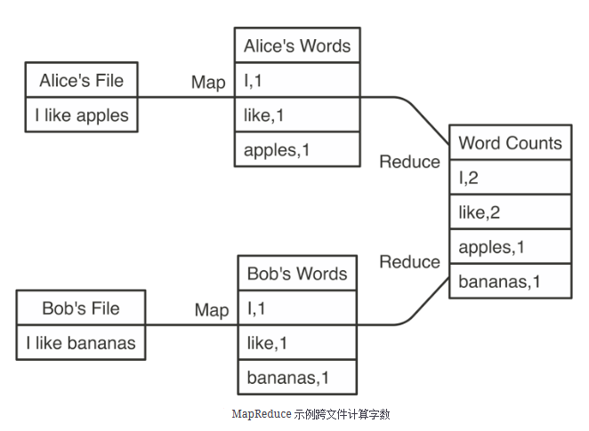

5 Spark
Apache Spark 是用于大规模数据处理的统一分析引擎。
Spark 提供了一组超出 MapReduce 的更丰富的动词，以方便优化在多台计算机中运行的代码。Spark 还将数据加载到内存中，使操作速度比 Hadoop 的磁盘存储快得多。

5.1 安装
5.1.1 java 8
5.1.2 sparklyr
Show the code
#install.packages("sparklyr")
packageVersion("sparklyr")5.1.3 spark
5.2 连接
5.3 使用
Show the code
cars <- copy_to(sc, mtcars)
carsShow the code
spark_write_csv(cars, "data/spark/cars.csv")
cars <- spark_read_csv(sc, "data/spark/cars.csv")5.3.1 分布式
5.3.2 流
Show the code
dir.create("data/spark/input")
dir.create("data/spark/output")
write.csv(mtcars, "data/spark/input/cars_1.csv", row.names = F)
stream <-stream_read_csv(sc, "data/spark/input/") %>%
select(mpg, cyl, disp) %>%
stream_write_csv("data/spark/output/")
dir("data/spark/output", pattern = ".csv")
write.csv(mtcars, "data/spark/input/cars_2.csv", row.names = F)
# 几秒钟后
dir("data/spark/output", pattern = ".csv")
stream_stop(stream)
file.remove("data/spark/input")
file.remove("data/spark/output")5.4 Web 界面
Show the code
spark_web(sc)
5.5 断开连接
Show the code
spark_disconnect(sc)
spark_disconnect_all()